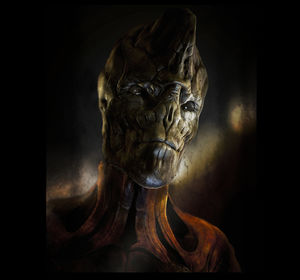

Banu
Banu (pronounced: /BAH-new/) were the first interstellar species encountered by humans, and soon after, they became humanity's first interstellar allies. They were discovered by a NavJumper named Vernon Tar, who was out exploring and nearly started a war by taking a shot at a Banu pilot. Once the two civilizations came together and signed the first Interstellar Peace & Trade Accord, they began to trade technology and help each other expand into the universe. Once they spread out, they formed the Banu Protectorate to oversee all of their systems. The Banu are the traders, the culture-hounds of the universe. Their planets are varied and colorful.
History
Humanity’s first interstellar friends. Discovered by a NavJumper named Vernon Tar who was out exploring and nearly started a war by taking a shot at a Banu pilot. That Banu, as it turned out, was on the run from local officials for embezzling funds. A delegation party from the UNE helped to defuse the situation and opened up the first dialogue between the two civilizations.
Once the two civilizations came together and signed the first Interstellar Peace & Trade Accord, they began to trade technology and help each other expand into the universe. Once they spread out, they formed the Banu Protectorate to oversee all of their systems.
Homeworld
Baachus. At least the UEE thinks so because this is the world where the Banu convene for ‘Gatherings’ (which isn't often). A fact the Banu evade with aplomb.
Personality
Trade is the name of the game in the Banu systems. While each of the planets boast their own specific flavor of culture and tradition, a love of money and trade bind them all. Banu worlds are vibrant, dangerous places with criminals and nobles brushing shoulders in the various marketplaces. Anything can be found with the Banu if you have the credits.
Having said that, we should also note that this doesn't describe every single Banu; just most of them. You can create a Banu who despises the whole profit-oriented focus, or an impetuous Xi’An. But they probably have difficulty fitting in their society.
Political System
Republic of Planet-States, each run under its own political system. The leaders (or selected representatives) of each planet will gather for a quorum to discuss/debate legal and trade issues that affect the entire species. Otherwise, each is left to their own devices to succeed or fail.
Military
The Banu can pull together a formidable fighting force if needed, but they do not have a dedicated standing army. Instead, the Banu Militia keeps the (relative) peace on a day-to-day basis within their systems. This militia operates on a rotational basis, drawing volunteers (even some criminals) from the various inhabited planets within the system to keep an eye on things in space. To call their approach to law enforcement ‘fast and loose’ is an understatement.
Religion
Multiple. Unsurprisingly, the two deities with the greatest following are Cassa, the Patron of Luck, and Taernin, the Great Traveller.
The Protectorate’s spiritual center is located in the Trise System. While the Gatherings on Bacchus handle the legal and political, “The Council” is responsible for the social and moral dictums that define and direct Banu society.
Their calling requires pure objectivity when dealing with their own race, so they are separated from the rest of their people in so much as is possible.
There are no great Banu pilgrimages, though, so do not expect worshippers to flock to the system. That the Council must be separate from the rest of society is law. Banu monk equivalents do produce elaborate copper-based artwork which has a certain kitsch value; their healers concoct a variety of medicines which have been shown to have a positive effect on Human disease.
Ships
Currently the only known ship by the Banu is the Merchantman.
Star Systems
Most of Banu territory is located in the south of the UEE. Except for Trise, which is located in the North.
- Bacchus
- Geddon
- Gliese
- Ophos
- Yulin
- Kins
- Trise
Culture
Sports
Like the UEE, the Banu are also interested in Sataball. It is the raw physical mechanics of the sport that make them so enamored of Sataball. Most Banu have eschewed the more traditional route of picking a favorite team to support and have instead opted to root equally for both teams when they attend a Sataball game. It doesn’t matter who wins or loses, what they are invested in is if the match is as exciting as possible. According to statistics provided by the Sataball Professional League, in 2944 Banu sales made up almost 35% of the total ticket revenue for the year, with border systems having even higher attendance numbers. In response, some locations have started catering to this unique demographic by offering Banu concessions and announcers.
Star Systems
Suffice it to say, there is a lot of crime in the Banu Protectorate. The woeful lack of communication between the various planet-states means that criminals can simply hop from world to world when his/her current world becomes too dangerous. Since the UEE (even the Advocacy) is forbidden to pursue criminals over the borders, the Banu Protectorate is a haven for UEE criminals. And if an attempt is made to reclaim fugitives through official channels, very few of the Banu planets will extradite any fugitives found on their surface. That hasn't stopped some of the more creative thinkers within the Advocacy from sending Agents undercover, tracking and abducting fugitives, then smuggling them back into UEE space.